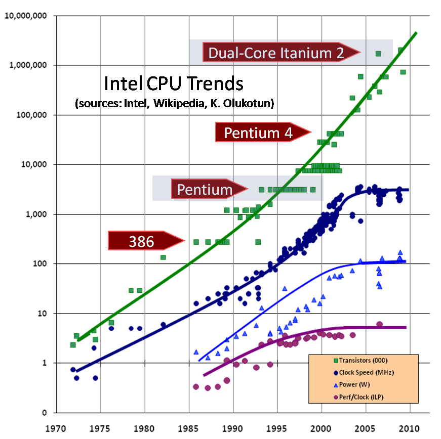
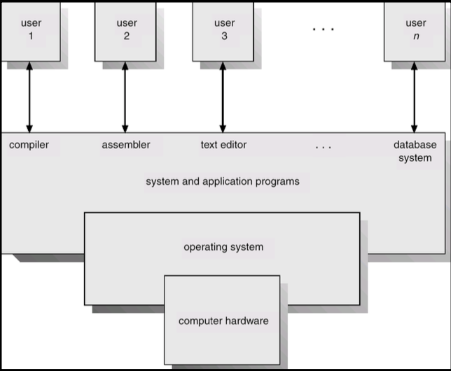
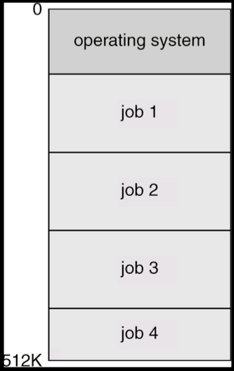
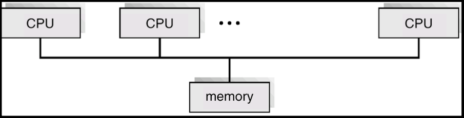
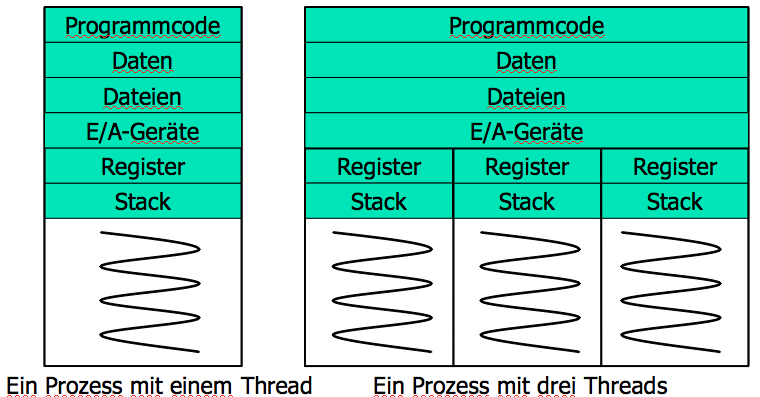
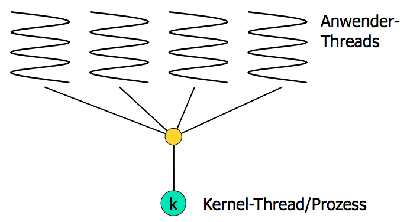
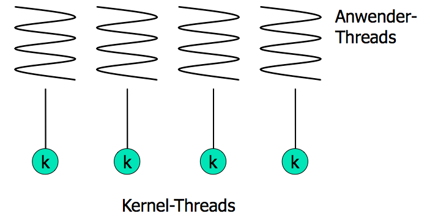
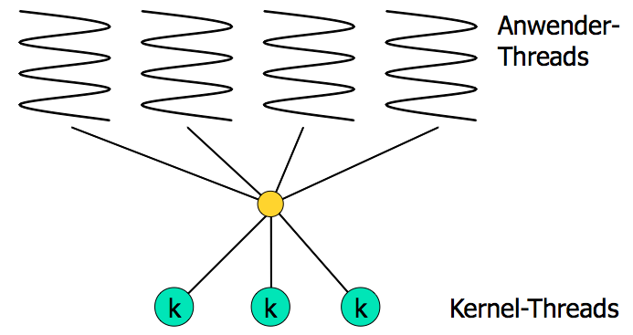
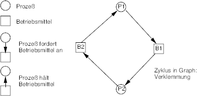

Einstieg
Parallelprogrammierung
Warum Parallelprogrammierung?
Technische Gründe
- Erhöhung der Rechenleistung durch Erhöhung der Taktfrequenzen stösst technisch an Grenzen
- Mooresche Gesetz gilt aber noch.
- Folge: Prozessoren mit mehreren Kernen.
- Leistungssteigerung durch Parallelarbeit
- Geschwindigkeitssteigerung bei \(n\) Kernen theoretisch n-fach
- praktisch nicht erreichbar
- Anwendungsentwicklung auf Parallelprogrammierung nicht vorbereitet
Computer im Wandel der Jahrzehnte

- Ein iPhone enthält ca. 1 Milliarde Transistoren.
- Um diese Rechenleistung mit der Technologie der 1950er Jahre zu
bauen, bräuchte es:
- 1 Milliarde Elektronenröhren
- 170 vehicle assembly buildings, um sie unterzubringen
- 1 Terawatt Leistung, um sie zu betreiben
- das entspräche 500 2-Gigawatt-Kernkraftwerken für ca. 50 Milliarden Euro
- das entspräche dem Weltbruttosozialprodukt von 60 Jahren
- Smartphones realisieren eine Steigerung der Rechenleistung um den Faktor \(10^{22}\) verglichen mit der Technologie vor 60 Jahren.
Welche Fortschritte gibt es in dieser Zeit in der Software?
Enwicklung der Mikroprozessortechnik

Robert C. Martin: The failure of state
Functional Programming – The Failure of State
Ausschnitte:
- 34:34 - fewer concurrency issues
- 36:12 - Moore's law bis 43:47
- 49:44 - OO = procedure + state bis 50:56
- 53:57 - impose discipline on the change of state bis 55:12
Prozesse, Threads, Synchronisation
(Die Ausführungen in diesem lehnen sich an ein Vorlesungsskript von Uwe Neuhaus an)
Bestandteile von Computersystemen
- Hardware – Bereitstellung grundlegender Betriebsmittel (Prozessor, Speicher, Ein-/Ausgabegeräte)
- Betriebssystem – steuert und koordiniert die Nutzung der Betriebsmittel für die verschiedenen Anwendungsprogramme der verschiedenen Anwender
- Anwendungsprogramme – definieren, wie das zu bearbeitende Problem mit Hilfe der Betriebsmittel gelöst wird (Compiler, Datenbanksysteme, Textverarbeitung, Spiele usw.)
- Anwender (Menschen, Maschinen, andere Computer)
Abstrakte Sicht der Bestandteile

Mehrprogrammbetrieb
Stapelverarbeitung
 Mehrere Aufträge werden im Speicher gehalten. Der Prozessor wechselt zwischen diesen Aufträgen hin und her.
CPU-Aufteilung
Ablauf eines Programms:
quasi-paralleler Ablauf zweier Programme:
Benötigte Betriebssystemfähigkeiten beim Mehrprogrammbetrieb
- Bereitstellung von Ein-/Ausgabe-Routinen
- Zuordnung von Geräten zu Aufträgen
- Speicherverwaltung – das Betriebssystem muss den verschiedenen Aufträgen Speicher zuordnen
- Prozessor-Scheduling – das Betriebssystem muss zwischen den verschiedenen, ausführbereiten Aufträgen auswählen
- Schutz vor Programmfehlfunktionen (Übergriffen eines Auftrags auf einen anderen, Endlosschleifen usw.)
Mehrbenutzersystem (Time-Sharing Systems) – Interaktive Benutzung
- Eine interaktive Kommunikationsmöglichkeit zwischen dem Anwender und der Computersystem wird bereitgestellt, die den Zugriff auf Programme und Daten erlaubt. Nach der Abarbeitung eines Kommandos wird das nächste Benutzerkommando erwartet.
- Der Prozessor wird in schneller Abfolge zwischen verschiedenen Aufträgen, die sich im Speicher und auf Festplatte befinden, hin und her geschaltet. (Nur Aufträge im Speicher erhalten den Prozessor.)
- Ein Auftrag wird in den Hauptspeicher ein- oder auf Festplatte ausgelagert.
Arbeitsplatzrechnersysteme / Personal-Computer
- Personal-Computer – Computersysteme, die ausschließlich einem einzigen Benutzer zur Verfügung stehen
- Ein-/Ausgabegeräte – Tastatur, Maus, Monitor, kleiner Drucker, …
- Komfortable Bedienung, schnelle Reaktionszeit
- Konzepte größerer Betriebssysteme können verwendet werden (z.B. Time-Sharing). Andere Aspekte u.U. weniger wichtig (z.B. Prozessor- Auslastung). Ausführung verschiedener Betriebssysteme möglich (Windows, MacOS, UNIX, Linux)
Mehrprozessorsysteme
Prinzip
- Mehrprozessorsysteme besitzen mehrere, eng gekoppelte Prozessoren
- Eng gekoppelt – Prozessoren nutzen gemeinsam Hauptspeicher und Systemtakt. Die Kommunikation zwischen den Prozessoren findet üblicherweise über den gemeinsam genutzten Speicher statt.
- Vorteile von Mehrprozessorsystemen: Erhöhter Durchsatz
- Verbessertes Preis/Leistungsverhältnis
- Höhere Zuverlässigkeit
- stufenweiser Leistungsverlust(gracefuldegradation)
- Ausfallsicherheit(fail-softsystems)
Varianten
- Symmetric multiprocessing (SMP)
- Auf jedem Prozessor läuft das identische Betriebssystem
- Mehrere Prozesse können ohne Leistungsverlust ablaufen
- Die meisten modernen Betriebssysteme unterstützen SMP
- Asymmetric multiprocessing
- Jeder Prozessor hat eine spezielle Aufgabe. Ein Master-Prozessor verteilt Aufgaben an die anderen (möglicherweise spezialisierten) Slave- Prozessoren.
- Beispiel: Grafikprozessoren
Architektur bei symmetrischen Mehrprozessorsystemen

Achtung: Zugriff auf den Hauptspeicher über gemeinsamen Bus kann zum Flaschenhals werden.
Prozesse
Für die Behandlung der Anforderungen in Mehrprogrammbetriebssystemen sind primitive Ad-hoc-Lösungen nicht mehr möglich. Das Verständnis des Gesamtsystems ist nicht mehr durch die Beschreibung des Verhaltens der CPU zu jedem Zeitpunkt möglich, da das Verhalten der CPU in Mehrbenutzersystemen im Mehrprogrammbetrieb stark von nicht vorhersagbaren externen Ereignissen (Unterbrechungen) abhängig ist. Das Betriebssystem wird als Ansammlung von funktionellen Einheiten betrachtet, die zunächst unabhängig voneinander arbeiten aber über wohldefinierte Schnittstellen miteinander kommunizieren müssen. Diese funktionellen Einheiten bezeichnet man als Prozesse.
Prozessbegriff
Typische Merkmale von Prozessen:
- brauchen Prozessor
- enthalten jeweils ein sequentielles Programm
- können grundsätzlich parallel ablaufen
Zur Abgrenzung zum Begriff Benutzerauftrag (Job): Zur Abarbeitung eines Benutzerauftrags sind in der Regel mehrere Prozesse notwendig.
Formen der Parallelität
- mehrere Prozesse laufen auf unterschiedlichen Prozessoren ab – (tatsächlich parallel)
- ein Prozessor wird "scheibchenweise" den Prozessen zugeordnet, sodass diese „überlappt“ ablaufen – (quasi-parallel)
Die im Zusammenhang mit der Parallelität von Prozessen auftretenden Probleme sind davon aber unabhängig.
Synchronisation konkurrierender Prozesse
Problem des wechselseitigen Ausschlusses
Das Problem des wechselseitigen Ausschlusses (mutual exclusion) wurde erstmals 1965 von Edsger W. Dijkstra formuliert.
Beispiel 1:
Zwei zyklische Prozesse \(p_1\) und \(p_2\) benutzen von Zeit zu Zeit ein Magnetband. Es steht nur ein Gerät zur Verfügung, das nicht von mehr als einem Prozess gleichzeitig benutzt werden kann.
1. Lösungsversuch: Definition einer booleschen Variable frei
\(p_1\):
001 wiederhole 002 wiederhole bis frei; 003 frei := false; 004 benutze(magnetband) 005 frei := true; ... ... FFF ständig
\(p_2\):
001 wiederhole 002 wiederhole bis frei; 003 frei := false; 004 benutze(magnetband) 005 frei := true; ... ... FFF ständig
Probleme:
- Wenn \(p_1\) und \(p_2\) parallel ablaufen, können sie auch gleichzeitig
das Magnetband als frei erkennen. Das gleiche Problem kann auch bei
quasi-parallel ablaufenden Prozessen auftreten, da jeder Prozess
zwischen
002und003unterbrochen werden kann. - Durch die Warteschleife wird Prozessorzeit beansprucht (busy waiting).
2. Lösungsversuch: Definition einer booleschen Variable p1anderReihe
\(p_1\):
001 wiederhole 002 wiederhole bis p1anderReihe; 003 benutze(magnetband) 004 p1anderReihe := false; ... ... FFF ständig
\(p_2\):
001 wiederhole 002 wiederhole bis nicht p1anderReihe; 003 benutze(magnetband) 004 p1anderReihe := true; ... ... FFF ständig
Ein wechselseitiger Ausschluss ist zwar gewährleistet, allerdings müssen die Prozesse das Magnetband abwechselnd benutzen. Beide Prozesse müssen außerdem „am Leben” bleiben. Busy waiting tritt auch hier auf.
3. Lösungsversuch: Definition zweier boolesche Variablen p1istdran und p2istdran
Initialisierung:
p1istdran := false p2istdran := false
\(p_1\):
wiederhole p1istdran := true wiederhole bis nicht p2istdran benutze(magnetband) p1istdran := false ... ständig
\(p_2\):
wiederhole p2istdran := true wiederhole bis nicht p1istdran benutze(magnetband) p2istdran := false ... ständig
Wechselseitiger Ausschluss ist zwar garantiert, es besteht aber die Gefahr der Verklemmung (deadlock).
Anforderungen an eine Lösung für das Problem des wechselseitigen Ausschlusses:
- Das Betriebsmittel wird nach endlicher Zeit zugewiesen.
- Ein Prozess gibt das Betriebsmittel nach endlicher Zeit wieder frei.
- Ein Prozess, der wartet, soll keine Rechenzeit verbrauchen.
- Eine Problemlösung soll von den Prozessen in eine gemeinsame Umgebung verlagert werden.
Das grundsätzliche Problem resultiert aus der „unkontrollierten“ Benutzung gemeinsamer Betriebsmittel.
Weitere Beispiele für das Auftreten des Problems des wechselseitigen Ausschlusses
- Veränderung von Datensätzen in einer von mehreren Prozessen gemeinsam benutzten Datei
- gemeinsame Benutzung von Unterprogrammen mit lokalen Variablen für Zwischenergebnisse
Definition (kritischer Abschnitt):
Programmabschnitte, in denen sich zu einem Zeitpunkt nur jeweils ein Prozess befinden darf, heißen kritische Abschnitte (critical sections).
Lösung: P- und V-Operationen nach Edsger W. Dijkstra
P und V sind zwei Operationen auf einer gemeinsamen Variablen,
genannt Semaphorvariable. Jedem kritischen Abschnitt wird eine
Semaphore zugeordnet.
Definition von P und V:
P(s):
wenn s=1
dann s:=0
sonst blockiere den aufrufenden Prozess
und schalte auf anderen Prozess um
V(s):
wenn ein Prozess auf s wartet
dann loese den Prozess aus Wartezustand
sonst s:=1
Beispiel für die Sicherung eines kritischen Abschnitts (Benutzung eines Magnetbandgeräts) …
… durch eine Semaphore s:
P(s) benutze(magnetband) V(s)
Eigenschaften von P und V:
- sind selbst kritische Abschnitte
- müssen atomar sein (dürfen nicht selbst unterbrochen werden)
- Es handelt sich aber um kurze kritische Abschnitte, die im Systemkern realisiert werden, wo wechselseitiger Ausschluss einfach zu implementieren ist.
- Sie werden häufig mithilfe eines Spezialbefehls des Prozessors realisiert, wobei ein aktives Warten in Kauf genommen wird.
- Dazu wird eine Sperrvariable
pvmit folgender Bedeutung eingeführt:
pv=1 : |
P- und V-Operationen können ausgeführt werden |
pv=0 : |
P- und V-Operationen können nicht ausgeführt werden |
Der Spezialbefehl teste_und_setze(pv)
… ist eine unteilbare Operation, die folgendermaßen arbeitet:
wiederhole solange pv = 0; (* tue nichts, busy waiting *) pv := 0
Mithilfe dieses Befehls werden nun zwei modifizierte Operationen P’
und V’ eingeführt, die dann zur Sicherung eines kritischen Abschnitts
eingesetzt werden können.
P'(s) teste_und_setze(pv) P(s) pv:=1
V'(s) teste_und_setze(pv) V(s) pv:=1
Alternative Realisierung für Semaphore
Sist ein Semaphoren-Objekt mit den Methodenwait()(möchte passieren) undsignal()(verlassen).- Ein Semaphoren-Objekt ist meist verbunden mit einer zugehörigen
Prozess-Warteschlange
W.
Prozess 1
S.wait(); i = leseZaehler(); i = i + 10; schreibeZaehler( i ); S.signal();
Prozess 2
S.wait(); j = leseZaehler(); j = j - 5; schreibeZaehler( j ); S.signal();
Realisierung eines binären Semaphors
S.wait(): if ( TestAndSet(belegt) ) { Prozess in Warteschlange W einreihen; Prozess in Zustand „wartend“ versetzen; }
S.signal(): if ( W.empty() == false ) { Einen Prozess aus Warteschlange W lösen; Prozess in Zustand „bereit“ versetzen; } else { belegt = false; }
Realisierung eines Zähl-Semaphors
S.wait(): if ( FetchAndAdd( zaehler, -1 ) < 1) { Prozess in Warteschlange W einreihen; Prozess in Zustand „wartend“ versetzen; }
S.signal(): if ( FetchAndAdd( zaehler, 1 ) < 0 ) { Einen Prozess aus Warteschlange W lösen; Gelösten Prozess in Zustand „bereit“ versetzen; }
Synchronisation kooperierender Prozesse
- Bisher wurden nur um gemeinsame Betriebsmittel konkurrierende Prozesse betrachtet, die sonst nichts miteinander zu tun hatten.
- Kooperation zwischen Prozessen kann z.B. heißen, dass Nachrichten zwischen einem Erzeuger und einem Verbraucher ausgetauscht werden (producer-consumer-problem).
- Nachrichtenaustausch soll gepuffert erfolgen, um Erzeuger und Verbraucher bezüglich ihrer Arbeitsgeschwindigkeit zu entkoppeln.
- Ringpuffer fester Größe kann nur eine feste Anzahl von Nachrichten speichern.
- Abbildung zeigt einen teilweise gefüllten Ringpuffer mit zwei
Zeigern,
cfür den Verbraucher undpfür den Erzeuger. - Beide Prozesse bearbeiten den Puffer im Uhrzeigersinn. Durch die Prozesssynchonisation muss verhindert werden, dass sie sich gegenseitig „überholen”.
Sychronisation von Erzeuger un Verbraucher durch Semaphore
- Die Prozesse benutzen jeweils eine Kommunikationsprozedur,
SendeNachrichtundEmpfangeNachricht, die dafür sorgen, dass derErzeuger wartet, wenn der Puffer voll ist, und der Verbraucher, wenn der Puffer leer ist.
Konsument
EmpfangeNachricht(puffer) while (true) { belegt.wait(); mutex.wait(); nachricht = holeAusPuffer(); mutex.signal(); frei.signal(); konsumiere(nachricht); }
Produzent
SendeNachricht(puffer) while (true) { nachricht = erzeuge(); frei.wait(); mutex.wait(); schreibeInPuffer(nachricht); mutex.signal(); belegt.signal(); }
Initialisierung: mutex.zaehler = 1; frei.zaehler = max; belegt.zaehler = 0;
Nachteil dieser Lösung
- Die Verantwortung für die korrekte Synchronisation bzw. deren korrekte Programmierung liegt bei den Prozessen.
- Programmierfehler können dabei zu schwer reproduzierbarem Fehlverhalten (z.B. Verklemmungen) führen.
Weitere klassische Synchronisationsprobleme
- Readers-Writers-Problem
- Einige Prozesse/Threads wollen einen Datenbereich lesen, einige wollen ihn verändern.
- Gleichzeitiger Lesezugriff ist erlaubt.
- Schreibzugriffe müssen exklusiv erfolgen.
- Dining-Philosophers-Problem
- Fünf Philosophen sitzen um einen runden Tisch, denken nach und essen Reis mit Stäbchen.
- Zwischen den Tellern liegt jeweils ein Stäbchen, zum Essen braucht man aber zwei.
Monitore
- Programmiersprachliches Konstrukt, funktional äquivalent zu Semaphoren
- Kritische Methoden und Daten werden in einer Klasse mit einem zugehörigen Semaphor kombiniert.
- Leichter zu handhaben, weniger fehleranfällig
- Unterstützung der Synchronisation durch Bedingungsvariablen
Synchronisation durch Nachrichtenaustausch
- Die bisher betrachteten Synchronisationsprimitive sind nur einsetzbar, wenn die beteiligten Prozesse Zugriff auf einen gemeinsamen Speicherbereich (shared memory) haben, in dem sich z.B. die Semaphorvariablen befinden.
- Auf diese Art ist daher die Synchronisation in Verteilten Systemen, wo Prozesse auf unterschiedlichen Maschinen ablaufen können, nicht möglich.
Hierfür werden neue Synchronisationsprimitive (Aufrufe des Systemkerns), die auf dem Austausch von Nachrichten (message passing) basieren, eingeführt:
send(destination,message)
receive(source,message)
- Mit
sendundreceivekönnen Prozesse synchronisiert werden, die auf Prozessoren ohne gemeinsamen Speicher ablaufen. - Bei einem Aufruf von
sendwird der Prozess blockiert, wenn keine Nachricht übermittelt werden kann. Bei einem Aufruf vonreceivewird der Prozess blockiert, wenn keine Nachricht verfügbar ist.
Mögliche Schwierigkeiten bei der Nachrichtenübermittlung:
- Verlust einer Nachricht
Abhilfe: jede gesendete Nachricht muss quittiert werden (acknowledgement), wiederholen der Nachricht beim Ausbleiben der Quittung - Verlust der Quittung
- doppeltes Eintreffen einer Nachricht beim Empfänger
Abhilfe: Numerieren der Nachrichten - Eindeutige Benennung (Adressierung) von:
- Prozessoren
- Maschinen
- domains
- Sicherheitsprobleme
- Effizienz, wenn Sender und Empfänger auf der gleichen Maschine laufen
Behandlung des Producer-Consumer-Problems mit message passing:
Annahmen:
- Nachrichten haben feste Länge.
- Gesendete, aber noch nicht empfangene Nachrichten werden vom Betriebssystem automatisch gepuffert.
- Maximal
maxNachrichten können gepuffert werden.
Consumer:
for i := 1 to max do send(producer,emptymessage);
while true do begin
receive(producer,message);
extract_data(message);
send(producer,emptymessage);
process(data);
end
Producer:
while true do begin
produce_data(data);
receive(consumer,emptymessage);
build_message(message,data);
send(consumer,message);
end
Anmerkungen:
- Die Zahl der Nachrichten bleibt konstant.
- Für Pufferung ist ein fester Speicherbereich vorgesehen.
- Pufferung und Adressierung erfolgt durch sog. mailboxes bei Sender und Empfänger.
- in UNIX entsprechen sogenannte pipes den mailboxes.
Threads
Prozesse und Threads
- Prozess
- ein in Ausführung befindliches Programm
- benötigt Ressourcen: Prozessor, Speicher (Programmcode, Daten, Stack), Dateien, E/A-Geräte
- bislang betrachtet: sequentiell arbeitende Prozesse (nur ein Ausführungsstrang)
- Thread
- ein Ausführungsstrang innerhalb eines Prozesses
- benötigt: Prozessor, eigenen Stack
- nutzt: Programmcode, Daten, Dateien, E/A-Geräte des Prozesses
- Mehrere Threads innerhalb eines Prozesses möglich

Beispiele für Multithreading
- Anwendungen mit graphischer Benutzeroberfläche, z.B. Textverarbeitung:
- Texteingabe
- Rechtschreibprüfung
- Ausdruck
- Serversoftware, z.B. Webserver, DB-Server:
- Administration
- Simultane Bearbeitung vieler Anfragen
Vorteile von Multithreading
- Kürzere Antwortzeiten
- Bei interaktiven Anwendungen kann auch auf Benutzereingaben reagiert werden, während andere, langandauernde Aufgaben durchgeführt werden.
- Gemeinsame Nutzung von Ressourcen
- Auf gemeinsamen Speicher sowie gemeinsame Dateien und E/A-Geräte kann ohne weiteren Aufwand zugegriffen werden.
- Wirtschaftlichkeit
- Die Erzeugung eines neuen Threads und der Wechsel zwischen zwei Threads eines Prozesses verursacht erheblich weniger Auf- wand (im Vergleich zur Prozesserzeugung/zum Prozesswechsel).
- Nutzung von Multiprozessorarchitekturen
- Auch ein einziger multithreading Prozess kann gleichzeitig mehrere Prozessoren nutzen.
Anwender- und Kernel-Threads
- Anwender-Threads
- Erzeugung, Scheduling und Verwaltung der Threads
erfolgt über spezielle Programm-Bibliotheken auf Ebene des
Anwendungsprogramms. Für den Kernel besteht das Programm aus
einem einzigen, single-threaded Prozess.
- Vorteil
- effizient (Kernel muss nicht eingreifen)
- Nachteil
- Muss ein Thread warten, müssen es alle.
- Kernel-Threads
- Erzeugung, Scheduling und Verwaltung der Threads
werden durch das Betriebssystem unterstützt.
- Vorteile
- Verteilung auf mehrere Prozessoren möglich; ein wartender Thread behindert die anderen Threads nicht.
- Nachteil
- Etwas langsamer als Anwender-Threads.
Multithreading-Modelle
- Many-to-One-Modell
- Mehrere Anwender-Threads werden auf einen Kernel-Thread abgebildet.
- Beispiele: Green-Thread-Library bei Solaris 2, POSIX Pthread- Library, Betriebssysteme ohne Thread-Unterstützung
- One-to-One-Modell
- Jeder Thread eines Anwendungsprogramms wird auf genau einen Kernel-Thread abgebildet
- Beispiele: Windows NT, Windows 2000, OS/2
- Many-to-Many-Modell
- Die Threads der Anwendungsprogramme werden auf eine Anzahl von Kernel-Threads gemultiplext.
- Beispiele: IRIX, HP-UX, Tru64 UNIX
Multithreading-Modelle: Many-to-One

Multithreading-Modelle: One-to-One

Multithreading-Modelle: Many-to-Many

Verklemmungen
Definition:
Eine Verklemmung (deadlock) bedeutet, dass zwei oder mehr Prozesse auf Ereignisse warten, die niemals eintreten werden („Nach-Ihnen-Nach-Ihnen”-Schleifen, warten im „Kreis”).
Beispiel: Verschachtelung von kritischen Abschnitten
| P1 : | P(a) | … | P(b) | … | V(b) | … | V(a) |
| P2 : | P(b) | … | P(a) | … | V(a) | … | V(b) |
Das Auftreten von Verklemmungen ist zeitabhängig. Ursachen sind im laufenden System schwer feststellbar und nicht ohne weiteres reproduzierbar.
Vier notwendige und hinreichende Bedingungen für das Auftreten von Verklemmungen:
- „Wechselseitiger Ausschluss”-Bedingung
- Ein Betriebsmittel, um das Prozesse konkurrieren, ist entweder frei oder genau einem Prozess zugewiesen.
- „Halte-und-warte”-Bedingung
- Prozesse mit bereits zugewiesenen Betriebsmitteln dürfen weitere Betriebsmittel anfordern (hold and wait).
- „Kein-Entzug”-Bedingung
- Prozesse geben Betriebsmittel nur von sich aus frei. Betriebsmittel können ihnen nicht zwangsweise entzogen werden.
- „Zirkuläres-Warten”-Bedingung
- Zwei oder mehr Prozessse warten wechselseitig auf Betriebsmittel, die von dem/den jeweils anderen gehalten werden.
Die vierte Bedingung wird, wie in Abbildung gezeigt, zur Modellierung von Verklemmungssituationen durch Graphen zum Zwecke der Verklemmungserkennung benutzt.

Vier Strategien mit dem Verklemmungsproblem umzugehen:
- Verklemmungen unmöglich machen
- Verklemmungen vermeiden
- Verklemmungen erkennen und beseitigen
- Verklemmungen ignorieren
Verklemmungen unmöglich machen
- Wechselseitigen Ausschluss verhindern (Bedingung 1 ist aufgehoben)
- Z. B. Einrichten eines Druckerdaemonen
- Probleme: nicht für alle Betriebsmittel geeignet, nur Verlagerung auf andere Betriebsmittel
- Zusätzliche Betriebsmittelanforderungen verbieten (Bedingung 2 ist
aufgehoben)
- Z. B. Anforderung aller benötigten Betriebsmittel zu Prozessbeginn
- Probleme: Unnötig lange Belegung der Betriebsmittel, schlechte Betriebsmittelauslastung
- Vorzeitige Betriebsmittelrückgabe erzwingbar machen (Bedingung 3 ist
aufgehoben)
- Z.B. Entzug nach einer bestimmten Zeit
- Bei CPU selbstverständlich, bei E/A-Geräten meist nicht sinnvoll.
- Probleme: muss ggf. auf Programmebene berücksichtigt werden, bereits geleistete Arbeitsleistung geht verloren
- Zirkularität unterbinden (Bedingung 4 ist aufgehoben)
- Z. B. lineare oder hierarchische Ordnung der Betriebsmittel, Anforderungen dann nur gemäß dieser Ordnung
- Probleme: keine allgemein brauchbare Ordnung angebbar, deshalb oft schlechte Auslastung
Verklemmungsvermeidung
beruht auf der Grundidee, die Betriebsmittelanforderungen der Prozesse in eine „verklemmungsfreie” Reihenfolge zu bringen. Die Algorithmen (Vgl. Bankiersalgorithmus) hierfür sind teiweise sehr komplex und auch nur anwendbar, wenn der gesamte Betriebsmittelbedarf der Prozesse im Vorhinein bekannt ist, was in der Praxis häufig nicht der Fall ist. Nichtsdestotrotz hat sich um dieses Thema herum eine eigene mathematische Theorie entwickelt, auf die hier aber nicht eingegangen wird.
Bankiersalgorithmus
- Betrachtung der Betriebsmittelanforderungen als gleichzeitig auftretende Maximalforderungen
- Unterscheidung von
- sicheren Zuständen (Verklemmung nicht möglich)
- unsicheren Zuständen (Verklemmung nicht zwingend, bei ungünstiger Anforderungsreihen- folge aber möglich)
- Weitere Prozesse werden nur gestartet, wenn kein unsicherer Zustand entsteht.
- Auf die Darstellung weiterer Details wird hier verzichtet.
Probleme der Verklemmungsvermeidung
- I. A. Zahl der maximal benötigten Betriebsmittel unbekannt
- Ständig wechselnde Zahl von Prozessen
- Zahl der verfügbaren Betriebsmittel ebenfalls veränderlich
- Algorithmus ist laufzeit- und speicherintensiv
Verklemmungen erkennen
- Analyse bei verdächtigen Symptomen:
- viele Prozesse warten und der Prozessor ist unbeschäftigt
- mindestens zwei Prozesse warten zu lange auf Betriebsmittel
- Bei Verdacht Start eines Erkennungsalgorithmus
- B. Zyklen-Erkennung im Betriebsmittelgraphen
Verklemmungen beseitigen
- Prozesse abbrechen
- Prozesse zurücksetzen
- Betriebsmittel entziehen
- Probleme:
- Prozess-/Betriebsmittelauswahl
- Verlust bereits geleisteter Arbeit
- Mögliche Inkonsistenzen
- U. U. manueller Mehraufwand erforderlich
Verklemmungen ignorieren
- Erkennung von Verklemmungen aufwendig
- Beseitigung von Verklemmungen nicht unproblematisch
- Vermeidung bzw. Unmöglichmachen von Verklemmungen u. U. wenig effizient
- Verklemmungen sind in der Regel nicht das dringlichste Problem